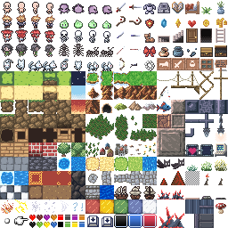

小さな升目で、形を区別する。
人物や剣、宝石の輪郭は少数の画素の段差で形作られています。実際の画像を整数倍率で拡大すると、その選び方が見えます。
作品・制作の例4件を紹介しています。実作品画像1点、参照・関連画像0点。画像の収集は継続中です。
技法・制作方法
Pixel art
小さな四角を並べて、人や町を描きます。ピクセルは、デジタル画像をつくる小さな点です。ピクセルアートでは、一つひとつの点やその集まりを意識して形をつくります。
実作品を見る

画像を表示できませんでした。下の出典ページで確認できます。
wareya（作者名表記） / 2023年6月22日公開
2023年公開の独立した作者によるゲーム制作素材の例です。歴史的な代表作や、ケニーの素材集の画像として扱うものではありません。
人物や剣、宝石の輪郭は少数の画素の段差で形作られています。実際の画像を整数倍率で拡大すると、その選び方が見えます。
上部には人物や道具、下には草地、岩、壁などが並びます。完成したゲーム画面ではなく、画面を組むための素材シートです。
wareya, Versatile 255-Tile Pixel Art Pack, v2, published 22 June 2023. Source: OpenGameArt.org. CC0 1.0.
出典で作品・資料を見る ↗CC0 1.0 Universal
作者wareyaが独自に制作した素材として公開し、CC0を指定しています。
配布PNG自体が制作素材で、作者のCC0指定に基づき掲載しています。
元の256×256ピクセルのPNGを変更せず、原寸以内で表示しています。
CC0は第三者の権利をなくすものではなく、作者の推薦や保証を意味しません。
画像の利用条件 ↗実在する作品・制作物（個別の分野は domain を参照）
16×16の小さな部品で場面を組み立てる例です。
作品・資料の出典を見る ↗原題：1-Bit Platformer Pack
ケニー（Kenney） / 2021 / ゲーム用画像素材集
日本語の見出しは読みやすさのための呼び名・説明名です。原題は記録欄に示しています。
公式ページでCC0を確認。画像ファイルの取得と実物確認は未完了です。
実在する作品・制作物（個別の分野は domain を参照）
16×16の部品で地下の場面を描きます。
作品・資料の出典を見る ↗原題：Tiny Dungeon
ケニー（Kenney） / 2022 / ゲーム用画像素材集
日本語の見出しは読みやすさのための呼び名・説明名です。原題は記録欄に示しています。
公式ページでCC0を確認。画像ファイルの取得と実物確認は未完了です。
実在する作品・制作物（個別の分野は domain を参照）
建物や町を小さな部品に分ける例です。
作品・資料の出典を見る ↗原題：Tiny Town
ケニー（Kenney） / 2023 / ゲーム用画像素材集
日本語の見出しは読みやすさのための呼び名・説明名です。原題は記録欄に示しています。
公式ページでCC0を確認。画像ファイルの取得と実物確認は未完了です。
現代の制作素材の例（歴史的代表作とは別）
人物、道具、地形を、小さな画素の部品に分けたシートです。
作品・資料の出典を見る ↗原題：Versatile 255-Tile Pixel Art Pack
wareya（作者名表記） / 2023年6月22日公開、v2 / ゲーム用画像素材集
作者が試作向けに公開した独立した素材例です。ケニーの3素材の代わりに同じ作品として掲載するものではありません。
人物や道具、地形を16×16ピクセルの小さな部品で描き分ける実制作素材です。完成したゲームの画面ではなく、画面を組み立てるための部品を集めたシートです。
ここでは、ゲームづくりに使えるケニーの三つの素材集と、別の作者wareyaが公開した素材シートを紹介します。古いゲームだけの表現ではなく、今の機械でも、限られた形で何を伝えるかを楽しめます。
色数が少ないと、隣り合う色の違いが大切になります。すべての作品が同じ色数とは限りません。
小さな文字は、点をどこに置くかで読みやすさが変わります。
斜めの線は階段状になります。大きくぼかすと、その工夫が見えなくなります。
小さな部品を組み合わせるタイル式では、隣の部品とつながる形も考えます。
単に低解像度の写真にすることとは違います。どの点を残し、どこを空けるかという設計が重要です。
紹介する四つの素材は、それぞれCC0で公開されています。ただし、他のゲームのキャラクターまで自由に使えるという意味ではありません。掲載画像はwareyaの素材だけで、ケニーの三つの素材の画像は未掲載です。
二人の制作者による近年の制作素材の例です。ピクセルアートの発祥やゲーム史全体の代表ではありません。
作品・制作の例4件を紹介しています。実作品画像1点、参照・関連画像0点。画像の収集は継続中です。